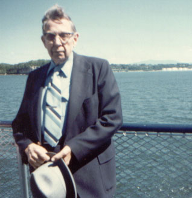

|
Walter Wogsland, son of of to Ole and Oletta Wogsland, was born in Hazelhurst, WI on 30 September 1901. Walter was in the army during World War I, stationed in Honolulu. His father died during that time. Walter eventually reached the rank of Major. He married Priscilla Aikey in 1933. They had no children. Walter was an administrator at Crile General Hospital in Cleveland. He developed artiosclerosis and retired in 1945 on disability. Walter and Priscilla made a home in Burlington, VT. Starting in 1979 he suffered a series of strokes which left him incapacitated, but his wife was there at his side taking care of him. Priscilla died in 1998, and Walter followed her a couple years thereafter.
|

Walter riding the ferry from Burlington to New York in 1978.
|